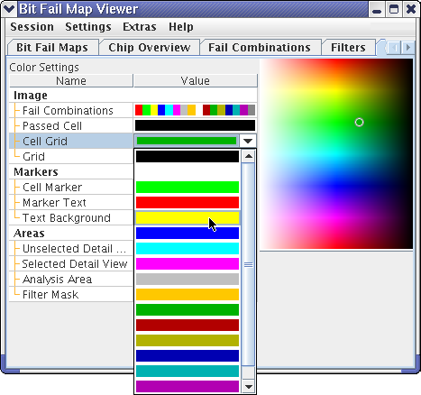
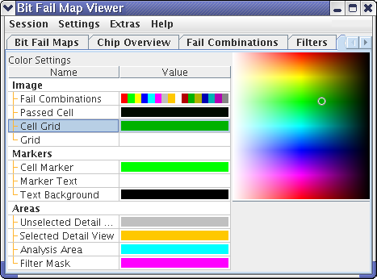
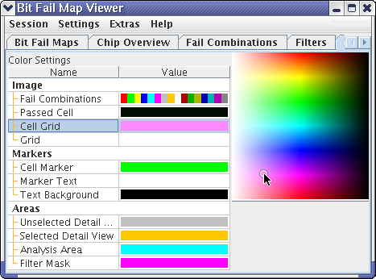
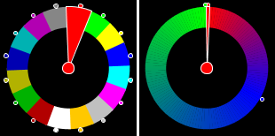

Changing the color scheme
Each new session in the BFM Viewer starts with a default color scheme for the bit fail maps that is suitable for most uses of the tool. You can, however, change the colors used to ones more suitable for your specific task when needed.
About this task
Changes to color settings are effective immediately. Any color settings are tied to the current session and are lost whenever the session is closed, for example, when you change the device or exit the BFM Viewer. To save them, you need to save the session as described in Creating, saving and restoring sessions.
Procedures
Assigning default colors
- Click the Colors tab.
The elements of this tab are described in Colors.
- To assign a different color from the default palette to any interface element, click the
color swatch beside the element and choose the desired color from the shortcut menu.

If you do this for Fail Combinations, an entire set of colors is assigned.
- To assign a color not found in the standard pop-up menus to any element:
- First choose a standard color, as described in step 2.
- Then edit this color, as described below in Assigning a custom color.
For editing a color set for fail combinations, see Editing a color set.
The new color is immediately used by the BFM Viewer in all relevant displays.
Assigning a custom color
If none of the default colors is suitable for a particular element, you can assign any color the computer can display.
- Click the element to which you want to assign a custom color.
The color of the selected element is indicated by a small circle in the color palette:

- In the color palette, click the desired color.
For example, to assign a pink color to the cell grid from the illustration above:

All changes affect only the color choices for the selected element. That is, the color you have chosen for the selected element is not available in the pop-up menus of the other elements.
Editing a color set
The pop-up for the fail combinations does not contain individual colors but entire color sets. You can edit these color sets:
- From the shortcut menu of the Fail Combinations element, choose the
color set that you want to edit.
A color wheel is displayed below the color palette. Depending on the color set you have chosen, a discrete or a continuous color wheel is displayed:

- To change one of the colors of the wheel:
- Click the segment of the wheel whose color you want to change.
- Assign a new color as described in step 2 of Assigning a custom color, above.
In a continuous color wheel, this also changes the colors in the surrounding segments, which always form blends.
- In a continuous color wheel only, you can also change the distribution of the colors by moving one of the color dots at the circumference of the wheel.
- Also only in continuous color wheels, you can add additional dots (which you can use as
described in step 3) by double-clicking segments.
Double-clicking a segment with a dot removes the dot. In this case, the colors are blended between the adjacent segments with dots.
Results
The colors that the BFM Viewer uses to display bit fail maps and auxiliary elements are set as desired.
Functional changes
- Introduced before SmarTest 6.3.2